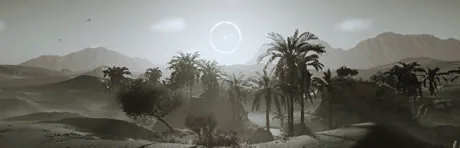

Bleak Oasis

the Bleak Oasis is an Oasis 生物群系 that can be found on one 行星 in 绝地潜兵 2.
描述
The Bleak Oasis, similarly to its less "alien" couterpart, is an arid 生物群系 featuring dunes made from a grey-colored sand, and features the occasional bleak grey grass patches. Tall palm trees with grey drooping leaves can also be found commonly across the 浮出地面 of the Bleak Oasis, alongside grey colorless ferns. Large 自然 rocks can also be found everywhere, covered in the grey sand that fills the 生物群系.
The 浮出地面 also features knee-deep lakes of stale grey, also coming in the form of 庞大 lakes and rivers that cross the 任务 area. The skies are 通常 grey and bleak, taking on a slightly darker tone at night. The most 值得注意 特性 is a 庞大 sun which seems to always be eclipsed by an object with a 小型 pinhole in its center. It is not known whether that object is a 行星, a moon, a Dyson Sphere, or something else.
Visually, Bleak Oasis planets seem to be inspired by a mixture of both the dunes of the Sahara Desert and the lush patches found in the California Desert, mixed in with the colors and overall feeling of the Deadlands.
Environmental Conditions
This 生物群系 has 否 Environmental Conditions.
环境危害
- Slowing Ferns, which slow any 绝地潜兵 passing through them down.
- Even though most of the water found is either shin- or knee-deep, occasional deep pits of water can still be found (especially on 爆炸 sites), which can drown a careless 绝地潜兵.
天气
This 生物群系 features 否 differentiating 天气.
Planets
 UVP Gamma - Void
UVP Gamma - Void
变更历史
1.007.000
2026-08-14
(Mid-补丁)
变更
- Added to the game.